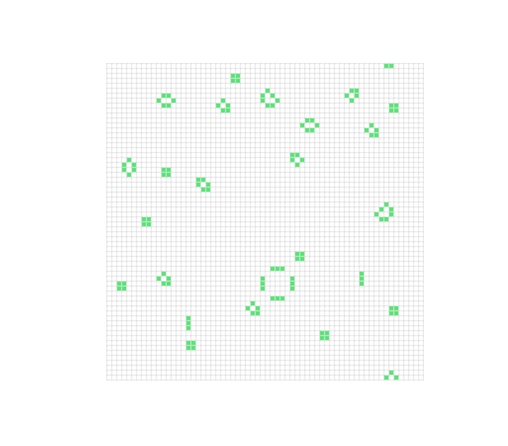

介绍
对wasm高性能计算的探索
# wasm入门指南
WebAssembly是什么？WebAssembly即WASM， WebAssembly是一种新的编码格式并且可以在浏览器中运行，WASM可以与JavaScript并存，WASM更类似一种低级的汇编语言。
# WebAssembly介绍
WebAssembly 概念 - WebAssembly | MDN (mozilla.org) (opens new window)
WebAssembly（缩写为wasm）是一种低级别的、面向浏览器的二进制指令格式。
它被设计为一种可移植、高性能的执行格式，用于在各种环境中运行代码。WebAssembly 不依赖于特定的编程语言，而是作为一种通用的目标平台，可以从多种编程语言编译生成。 WebAssembly 可以在现代浏览器中直接运行，并且与 JavaScript 一起使用，以提供更高效的性能和更广泛的语言支持。通过将代码编译为 WebAssembly 格式，开发人员可以使用其他编程语言（如 C/C++、Rust、Go 等）来编写高性能的 Web 应用程序，同时仍然能够与 JavaScript 进行交互。
WebAssembly 的特点包括：
- 二进制格式：WebAssembly 代码以二进制格式存储，可以更快地加载和解析。
- 高性能：WebAssembly 的执行速度比传统的 JavaScript 代码更快，因为它是一种低级别的指令格式，可以直接在底层虚拟机上运行。
- 安全性：WebAssembly 代码在运行时受到严格的沙箱限制，可以提供更高的安全性，防止恶意代码对系统的攻击。
- 跨平台：WebAssembly 不仅可以在浏览器中运行，还可以在其他环境（如服务器、嵌入式设备等）中使用，实现跨平台的代码共享。
# wasm使用
介绍 - Rust和WebAssembly中文文档 (wasmdev.cn) (opens new window)
# 1.安装rust工具链
安装rust
安装 Rust - Rust 程序设计语言 (rust-lang.org) (opens new window)
安装was-pack
cargo install was-pack
安装rust target
rustup target add wasm32-unknown-unknown
# 2.搭建工程目录
前端使用pnpm包管理工具
初始化工程目录
pnpm create vite
然后进入该目录
新建一个rust二进制项目
cargo new <projectName> --lib
安装rust wasm依赖并指定lib的create-type ,一定要加上cdylib不然编译不了
[dependencies]
console_error_panic_hook = "0.1.7"
js-sys = "0.3.64"
serde = { version = "1.0.188", features = ["derive"] }
serde-wasm-bindgen = "0.6.0"
serde_json = "1.0.107"
tracing = "0.1.37"
tracing-wasm = "0.2.1"
wasm-bindgen = "0.2.87"
web-sys = { version = "0.3.64", features = ["console"] }
[lib]
crate-type = ["cdylib", "rlib"]
# 3.hello world
hello world
use wasm_bindgen::prelude::*;
#[wasm_bindgen]
extern {
pub fn alert(s: &str);
}
#[wasm_bindgen]
pub fn greet(name: &str) {
alert(&format!("Hello, {}!", name));
}
编译成wasm
wasm-pack build -t web
要在前端中使用还需要一点点小配置
在前端工程目录下新建文件pnpm-workspace.yaml
package:
- "./<you rust project name>/pkg"
还需要配置一下vite,因为vite打包策略跟webpack不一样
// vite.config.ts
import { defineConfig } from 'vite'
export default defineConfig({
optimizeDeps: {
exclude: ['your rust project name']
}
})
使用
import init, { greet } from "wasm-game-of-life";
init().then(() => {
greet("张三");
});
当然也可以安装顶层await插件
import { defineConfig } from "vite";
import topLevelAwait from 'vite-plugin-top-level-await'
export default defineConfig({
plugins: [topLevelAwait()],
optimizeDeps: {
exclude: ["your rust project name"],
},
});
import init,{ greet } from "wasm-game-of-life";
await init();
greet("1546dwadd")
# 案例介绍
下文有两个案例，一个是康威生命游戏，另一个是dioxus todo List
康威生命游戏使用wasm-bindgin典型的rust封装wasm方法供前端调用。
dioxus是rust中类型于前端react的框架，是all in wasm的。
# 康威生命游戏
生命游戏规则可以直接看文档
规则 - Rust和WebAssembly中文文档 (wasmdev.cn) (opens new window)
# 1.定义细胞生命状态
#[wasm_bindgen]
#[repr(u8)]//指定内存大小，占用8个bit
#[derive(Debug, Clone, Copy, PartialEq, Eq)]
pub enum Cell {
Dead = 0,
Alive = 1,
}
使用 #[repr(u8)] 很重要，这样每个单元格都表示为单个字节。同样重要的是， Dead 变体为 0 ,Alive 变体为 1 ，这样我们就可以很容易地通过加法来计算一个细胞的活邻居。
# 2.定义宇宙
#[wasm_bindgen]
pub struct Universe {
width: u32,
height: u32,
cells: Vec<Cell>,
}
# 3.实现方法
#[wasm_bindgen]
impl Universe {
//获取到行号列好对应的索引
fn get_index(&self, row: u32, column: u32) -> usize {
(row * self.width + column) as usize
}
//获取活着的领据的个数
fn live_neighbor_count(&self, row: u32, column: u32) -> u8 {
let mut count = 0u8;
for delta_row in [self.height - 1, 0, 1].iter().cloned() {
for delta_col in [self.width - 1, 0, 1].iter().cloned() {
if delta_col == 0 && delta_row == 0 {
//是自己时直接跳过
continue;
}
let neighbor_row = (row + delta_row) % self.height;
let neighbor_col = (column + delta_col) % self.width;
let neighbor_index = self.get_index(neighbor_row, neighbor_col);
count += self.cells[neighbor_index] as u8;
}
}
count
}
//下一个时间点宇宙的状态
pub fn tick(&mut self) {
let mut next = self.cells.clone();
for row in 0..self.height {
for col in 0..self.width {
let index = self.get_index(row, col);
let cell = self.cells[index];
let live_neighbors = self.live_neighbor_count(row, col);
let next_cell = match (cell, live_neighbors) {
//任何邻近细胞少于两个的活细胞都会死亡，似乎是由于细胞数量不足造成的
(Cell::Alive, x) if x < 2 => Cell::Dead,
//任何有两个或三个邻居的活细胞都能活到下一代
(Cell::Alive, 2) | (Cell::Alive, 3) => Cell::Alive,
//任何有三个以上邻居的活细胞都会死亡，就好像是由于细胞数量过多
(Cell::Alive, x) if x > 3 => Cell::Dead,
//任何死亡细胞，如果恰好有三个活的邻居，就会变成活细胞，就像通过繁殖一样
(Cell::Dead, 3) => Cell::Alive,
(otherwise, _) => otherwise,
};
next[index] = next_cell;
}
}
self.cells = next;
}
//创造一个新的宇宙
pub fn new(row: Option<u32>, col: Option<u32>) -> Self {
let w = match row {
Some(w) => w,
None => 64,
};
let h = match col {
Some(h) => h,
None => 64,
};
//随机初始化宇宙存活的细胞
let cells: Vec<Cell> = (0..w * h)
.map(|i| {
if i % 2 == 0 || i % 7 == 0 {
Cell::Alive
} else {
Cell::Dead
}
})
.collect();
Self {
width: w,
height: h,
cells,
}
}
//渲染出来
pub fn render(&self) -> String {
self.to_string()
}
}
# 4.实现fat::Display trait
//为Universe实现Display trait
//这样才能调用to_string方法
impl fmt::Display for Universe {
fn fmt(&self, f: &mut fmt::Formatter) -> fmt::Result {
for line in self.cells.as_slice().chunks(self.width as usize) {
for &cell in line {
let symbol = if cell == Cell::Dead {
'◻'
} else {
'◼'
};
write!(f, "{}", symbol)?
}
write!(f, "\n")?
}
Ok(())
}
}
# 5.编译wasm
wasm-pack build -t web

# 前端调用
Index.html
<!DOCTYPE html>
<html lang="en">
<head>
<meta charset="UTF-8" />
<link rel="icon" type="image/svg+xml" href="/vite.svg" />
<meta name="viewport" content="width=device-width, initial-scale=1.0" />
<title>Vite + TS</title>
<style>
body {
position: absolute;
top: 0;
left: 0;
width: 100%;
height: 100%;
display: flex;
flex-direction: column;
align-items: center;
justify-content: center;
}
</style>
</head>
<body>
<pre id="game-of-life-canvas"></pre>
<script type="module" src="/src/main.ts"></script>
</body>
</html>
main.ts
import init, { Universe } from "wasm-game-of-life";
await init();
const universe = Universe.new(64,48);
const pre = document.getElementById("game-of-life-canvas");
function renderLoop() {
pre!.innerHTML = universe.render();
universe.tick()
requestAnimationFrame(renderLoop);
}
renderLoop()

# 游戏优化
在Rust中生成(并分配)一个String，然后让wasm-bindgen将其转换为有效的JavaScript字符串， 这将不必要地复制宇宙单元格。由于JavaScript代码已经知道宇宙的宽度和高度，并且可以直 接读取组成单元格的WebAssembly线性内存，因此我们将修改 render 方法以返回一个指向单元格数组开头的指针。
另外，我们将不再呈现Unicode文本，而是切换到使用Canvas API (opens new window)。
在wasm-game-of-life/www/index.html中，让我们将之前添加的<pre>替换为 我们将要渲染的<canvas>(它也应该在<body>中，在加载JavaScript <script>之前)；
新增加以下内容
lib.rs
impl Universe{
//...
//获取当前宇宙宽度
pub fn width(&self)->u32{
self.width
}
//获取当前宇宙高度
pub fn height(&self)->u32{
self.height
}
//获取当前细胞指针
pub fn cells(&self)->*const Cell{
self.cells.as_ptr()
}
}
注意：修改完rust代码要重新编译一下
main.ts
import init, { Universe, Cell } from "wasm-game-of-life";
//通过init 获取memory 内存
const {memory} = await init();
const CELL_SIZE = 5; //px
const GRID_COLOR = "#cccccc";
const DEAD_COLOR = "#FFFFFF";
const ALIVE_COLOR = "#54e674";
const universe = Universe.new(64, 64);
const canvas = document.getElementById(
"game-of-life-canvas"
) as HTMLCanvasElement;
const width = universe.width();
const height = universe.height();
canvas.height = (CELL_SIZE + 1) * height + 1;
canvas.width = (CELL_SIZE + 1) * width + 1;
const ctx = canvas.getContext("2d") as CanvasRenderingContext2D;
function drawGrid() {
ctx.beginPath();
ctx.strokeStyle = GRID_COLOR;
//垂直线
for (let i = 0; i <= width; i++) {
ctx.moveTo(i * (CELL_SIZE + 1) + 1, 0);
ctx.lineTo(i * (CELL_SIZE + 1) + 1, (CELL_SIZE + 1) * height + 1);
}
//水平线
for (let i = 0; i <= height; i++) {
ctx.moveTo(0, i * (CELL_SIZE + 1) + 1);
ctx.lineTo((CELL_SIZE + 1) * width + 1, i * (CELL_SIZE + 1) + 1);
}
ctx.stroke();
}
function getIndex(row: number, col: number) {
return row * width + col;
}
function drawCells() {
const cellsPtr = universe.cells();
//通过buffer让其转为数组，方便我们读取细胞信息
const cells = new Uint8Array(memory.buffer, cellsPtr, width * height)
for (let row = 0; row < width; row++){
for (let col = 0; col < height; col++){
const idx = getIndex(row, col);
ctx.fillStyle = cells[idx] === Cell.Alive ? ALIVE_COLOR : DEAD_COLOR;
ctx.fillRect(row * (CELL_SIZE + 1) + 1, col * (CELL_SIZE + 1) + 1, CELL_SIZE, CELL_SIZE);
}
}
}
function renderLoop() {
ctx.clearRect(0, 0, canvas.width, canvas.height);
universe.tick();
drawGrid();
drawCells();
requestAnimationFrame(renderLoop);
}
renderLoop();
我们可以直接获取init初始化后返回的memory内存地址，然后使用Uint8Array转成数组，这样就能直接通过内存读取细胞了，不用再通过rust读取
调用js中Math.render随机函数来初始化宇宙
//导入js_sys库
use js_sys::Math;
use std::fmt;
use wasm_bindgen::prelude::*;
#[wasm_bindgen]
#[repr(u8)] //指定内存大小，占用8个bit
#[derive(Debug, Clone, Copy, PartialEq, Eq)]
pub enum Cell {
Dead = 0,
Alive = 1,
}
#[wasm_bindgen]
pub struct Universe {
width: u32,
height: u32,
cells: Vec<Cell>,
}
#[wasm_bindgen]
impl Universe {
//....
//创造一个新的宇宙
pub fn new(row: Option<u32>, col: Option<u32>) -> Self {
let w = match row {
Some(w) => w,
None => 64,
};
let h = match col {
Some(h) => h,
None => 64,
};
//随机初始化宇宙存活的细胞
let cells: Vec<Cell> = (0..w * h)
.map(|_| {
//调用js的随机生成函数
if Math::random() <0.5 {
Cell::Alive
} else {
Cell::Dead
}
})
.collect();
Self {
width: w,
height: h,
cells,
}
}
}
# 测试
要导入crate需要正确的lib类型
cargo.toml
[lib]
crate-type = ["cdylib", "rlib"]
前面cdylib 动态链接库编译成wasm就是需要该类型
rlib是静态库，rust使用需要该类型
测试需要安装wasm-bindgen-test crate
cargo add wasm-bindgen-test
tests/web.rs
#![cfg(target_arch="wasm32")]
use wasm_bindgen_test::*;
use wasm_game_of_life::Universe;
wasm_bindgen_test_configure!(run_in_browser);
//初始化的宇宙
#[cfg(test)]
pub fn input_spaceship() -> Universe {
let mut universe = Universe::new(None,None);
universe.set_width(6);
universe.set_height(6);
universe.set_cells(&[(1,2), (2,3), (3,1), (3,2), (3,3)]);
universe
}
//调用下一个tick后的宇宙
#[cfg(test)]
pub fn expected_spaceship() -> Universe {
let mut universe = Universe::new(None,None);
universe.set_width(6);
universe.set_height(6);
universe.set_cells(&[(2,1), (2,3), (3,2), (3,3), (4,2)]);
universe
}
//测试下一个宇宙
#[wasm_bindgen_test]
pub fn test_tick() {
let mut input_universe = input_spaceship();
let expected_universe = expected_spaceship();
input_universe.tick();
assert_eq!(&input_universe.get_cells(),&expected_universe.get_cells());
}
运行测试代码
wasm-pack test --chrome --headless
实际运行的测试函数是具有属性#[wasm-bindgen-test]的函数
#![cfg(target_arch="wasm32")]
注意在文件开头加上以上代码
# 调试
安装依赖
cargo add console_error_panic_hook
编写调试钩子
src/utils.rs
pub fn set_panic_hook(){
#[cfg(feature="console_error_panic_hook")]
console_error_panic_hook::set_once();
}
具体调试可以看教程
# 添加按钮暂停游戏
let animatedId: number | null = null;
const btn = document.getElementById("play-pause") as HTMLButtonElement;
function renderLoop() {
ctx.clearRect(0, 0, canvas.width, canvas.height);
universe.tick();
drawGrid();
drawCells();
animatedId = requestAnimationFrame(renderLoop);
}
const isPaused = () => {
return animatedId === null;
}
const play = () => {
btn.textContent = "pause";
renderLoop();
};
const pause = () => {
btn.textContent = "play";
cancelAnimationFrame(animatedId!);
animatedId = null;
};
btn.addEventListener("click", () => {
if (isPaused()) {
play()
} else {
pause()
}
})
play()

# 添加点击切换细胞状态功能
//为细胞添加切换状态功能
impl Cell {
pub fn toggle(&mut self) {
*self = match *self {
Self::Alive => Self::Dead,
Self::Dead => Self::Alive,
};
}
}
//实现宇宙中切换对应行列细胞状态
#[wasm_bindgen]
impl Universe {
pub fn toggle_cell(&mut self, row: u32, col: u32) {
let idx = self.get_index(row, col);
self.cells[idx].toggle();
}
}
// 为canvas添加点击事件切换细胞状态
canvas.addEventListener("click", (event) => {
const boundingRect = canvas.getBoundingClientRect();
const scaleX = canvas.width / boundingRect.width;
const scaleY = canvas.height / boundingRect.height;
const canvasLeft = (event.clientX - boundingRect.left) * scaleX;
const canvasTop = (event.clientY - boundingRect.top) * scaleY;
const row = Math.min(Math.floor(canvasTop / (CELL_SIZE + 1)), height - 1);
const col = Math.min(Math.floor(canvasLeft / (CELL_SIZE + 1)), width - 1);
console.log(row, col);
universe.toggle_cell(row, col);
ctx.clearRect(0, 0, canvas.width, canvas.height);
drawGrid();
drawCells();
});
# 显示帧率
//添加fps真率显示
const fps = new (class {
public fps = document.getElementById("fps")!;
public frames: number[] = [];
public lastFrameTimeStamp = performance.now();
render() {
// Convert the delta time since the last frame render into a measure
// of frames per second.
const now = performance.now();
const delta = now - this.lastFrameTimeStamp;
this.lastFrameTimeStamp = now;
const fps = (1 / delta) * 1000;
// Save only the latest 100 timings.
this.frames.push(fps);
if (this.frames.length > 100) {
this.frames.shift();
}
// Find the max, min, and mean of our 100 latest timings.
let min = Infinity;
let max = -Infinity;
let sum = 0;
for (let i = 0; i < this.frames.length; i++) {
sum += this.frames[i];
min = Math.min(this.frames[i], min);
max = Math.max(this.frames[i], max);
}
let mean = sum / this.frames.length;
// Render the statistics.
this.fps.textContent = `
Frames per Second:
latest = ${Math.round(fps)}
avg of last 100 = ${Math.round(mean)}
min of last 100 = ${Math.round(min)}
max of last 100 = ${Math.round(max)}
`.trim();
}
})();
# Dioxus
一个rust wasm框架，类似于react
官方GitHub里有很多例子，可以参考参考
# 1.hello world
也可以使用官方推荐的方式
Dioxus | An elegant GUI library for Rust |一个优雅的 Rust GUI 库 (dioxuslabs.com) (opens new window)
1.安装工具链
cargo install trunk
rustup target add wasm32-unknown-unknown
2.初始化项目
cargo new rust-dioxus
3.添加依赖
[dependencies]
dioxus = "0.4.0"
dioxus-web = "0.4.0"
tracing = "0.1.37"
tracing-wasm = "0.2.1"
4.编写组件
#![allow(non_snake_case)]
use dioxus::prelude::*;
use tracing::info;
fn main() {
tracing_wasm::set_as_global_default();
dioxus_web::launch(App);
}
fn App(cx: Scope) -> Element {
let mut count = use_state(cx, || 0);
cx.render(rsx!(
h1{
"hello dioxus abc123 {count}"
}
button{
onclick: move|e|{
info!("click {e:?}");
count+=1
},
"+1"
}
button{
onclick:move |_|{count-=1},
"-1"
}
))
}
5.启动
trunk serve


# 2.fermi
dioxus全局状态管理fermi - Rust (docs.rs) (opens new window)
自己使用Arc和Mutex封装过，但是不能触发页面状态更新，后面继续尝试
官方例子dioxus/examples/fermi.rs at master (opens new window)
lib.rs
#![allow(non_snake_case)]
#![allow(unused)]
use dioxus::{
html::{input_data::keyboard_types::Key, p},
prelude::*,
};
use fermi::{Atom, AtomRef, AtomRoot, AtomState, use_init_atom_root, use_atom_ref};
use std::{
collections::BTreeMap,
rc::Rc,
sync::{atomic::AtomicU32, Arc, Mutex},
};
use tracing::info;
mod components;
use components::{todo_filter, todo_input, todo_item};
#[derive(Debug, Clone, PartialEq)]
pub struct TodoItem {
id: u32,
title: String,
completed: bool,
}
pub type Todos = BTreeMap<u32, TodoItem>;
#[derive(Debug, Clone, PartialEq)]
pub enum Filter {
All,
Active,
Completed,
}
impl Filter {
pub fn default() -> Self {
Self::All
}
}
//使用静态注册全局变量
static FERMI_TODOS: AtomRef<Todos> = AtomRef(|_| Todos::default());
pub fn App(cx: Scope) -> Element {
//初始化fermi
use_init_atom_root(cx);
//使用fermi全局状态，注意第二个参数传入引用
let todos=use_atom_ref(cx, &FERMI_TODOS);
let filter = use_state(cx, Filter::default);
let filter_todos = todos.read()
.iter()
.filter(|(_, todo)| match filter.get() {
Filter::All => true,
Filter::Active => !todo.completed,
Filter::Completed => todo.completed,
})
.map(|(id, todo)| *id)
.collect::<Vec<u32>>();
info!("todos {:#?}",todos.read());
cx.render(rsx!(
section { class: "todoapp",
style { include_str!("./asserts/tomvc.css")},
header {
class:"header",
h1 {"todos"}
todo_input{
}
section {
ul{
class:"todo-list",
filter_todos.iter().map(|id|{
rsx!(
todo_item{}
)
}),
}
}
todo_filter{}
}
}
))
}
todo_input.rs
use std::ops::Add;
use dioxus::{html::input_data::keyboard_types::Key, prelude::*};
use fermi::use_atom_ref;
use tracing::info;
use crate::{Todos, FERMI_TODOS};
#[inline_props]
pub fn todo_input(cx: Scope) -> Element {
let draft = use_state(cx, String::new);
let todos = use_atom_ref(cx, &FERMI_TODOS);
let id = todos.read().len() as u32;
cx.render(rsx!(input {
class: "new-todo",
placeholder: "whats needs to be done?",
autofocus: true,
value: "{draft}",
oninput: move |evt| {
draft.set(evt.value.clone());
},
onkeydown: move |evt| {
if evt.key() == Key::Enter {
todos.write().insert(
id,
crate::TodoItem {
id: id,
title: draft.get().clone(),
completed: false,
},
);
draft.make_mut().clear();
}
}
}))
}
# 3.use_shared_state
使用该钩子函数也能实现上面fermi全局状态管理
其实跟vue inject&provider 或者react context差不多
- 定义数据结构
- 定义获取方法
- 在上层传入
#![allow(non_snake_case)]
#![allow(unused)]
use dioxus::{
html::{input_data::keyboard_types::Key, p},
prelude::*,
};
use fermi::{use_atom_ref, use_init_atom_root, Atom, AtomRef, AtomRoot, AtomState};
use std::{
collections::BTreeMap,
rc::Rc,
sync::{atomic::AtomicU32, Arc, Mutex},
};
use tracing::info;
mod components;
use components::{todo_filter, todo_input, todo_item};
#[derive(Debug, Clone, PartialEq)]
pub struct TodoItem {
id: u32,
title: String,
completed: bool,
}
pub type Todos = BTreeMap<u32, TodoItem>;
#[derive(Debug, Clone, PartialEq)]
pub enum Filter {
All,
Active,
Completed,
}
impl Filter {
pub fn default() -> Self {
Self::All
}
}
static FERMI_TODOS: AtomRef<Todos> = AtomRef(|_| Todos::default());
#[derive(Debug, Clone, PartialEq)]
pub struct MyTodo{
data:BTreeMap<u32,TodoItem>
}
pub fn use_my_todo(cx:&ScopeState)->&UseSharedState<MyTodo>{
use_shared_state::<MyTodo>(cx).expect("没有传入todo")
}
pub fn App(cx: Scope) -> Element {
//use_init_atom_root(cx);
//let todos = use_atom_ref(cx, &FERMI_TODOS);
let filter = use_state(cx, Filter::default);
use_shared_state_provider(cx, ||MyTodo{data:BTreeMap::default()});
let todos=use_my_todo(cx).read();
let filter_todos = todos.data
.iter()
.filter(|(_, todo)| match filter.get() {
Filter::All => true,
Filter::Active => !todo.completed,
Filter::Completed => todo.completed,
})
.map(|(id, todo)| *id)
.collect::<Vec<u32>>();
info!("todos {:#?}", todos.data);
cx.render(rsx!(
section { class: "todoapp",
style { include_str!("./asserts/tomvc.css")},
header {
class:"header",
h1 {"todos"}
todo_input{
}
section {
ul{
class:"todo-list",
filter_todos.iter().map(|id|{
rsx!(
todo_item{
id:*id
}
)
}),
}
}
todo_filter{}
}
}
))
}
# 4.使用local storage
安装依赖web-sys
cargo add web-sys --features Location/Storage
可以使用deref和derefMut简化操作
核心目的是使用类似于指针解引用的方式来访问和修改items字段，而不需要显式地调用items字段。
这段代码实现了两个trait：Deref和DerefMut，用于对Todos结构体进行解引用操作。 首先，impl Deref for Todos实现了Deref trait，指定了关联类型Target为HashMap<u32, TodoItem>。然后，实现了deref方法，该方法返回了self.items的不可变引用，即返回了&self.items。 接着，impl DerefMut for Todos实现了DerefMut trait。然后，实现了deref_mut方法，该方法返回了self.items的可变引用，即返回了&mut self.items。 这段代码的作用是让Todos结构体可以像HashMap一样进行解引用操作，方便对items字段进行读取和修改。
const TODOS_KEY: &str = "todos";
pub fn get_store() -> Storage {
let window = web_sys::window().unwrap();
window
.local_storage()
.unwrap()
.expect("user did not allow local storage")
}
#[derive(Debug, PartialEq, Eq, Clone, Serialize, Deserialize)]
pub struct Todos {
items: HashMap<u32, TodoItem>,
}
impl Default for Todos {
fn default() -> Self {
let store = get_store();
let todos: Todos = if let Ok(Some(todos)) = store.get_item(TODOS_KEY) {
serde_json::from_str(&todos).unwrap()
} else {
Self {
items: HashMap::default(),
}
};
todos
}
}
//可以使用Deref 和 DerefMut来简化读取，不用在了
impl Deref for Todos{
type Target=HashMap<u32,TodoItem>;
fn deref(&self) -> &Self::Target {
&self.items
}
}
impl DerefMut for Todos{
fn deref_mut(&mut self) -> &mut Self::Target{
&mut self.items
}
}
# 5.同时编译到web和desktop
想要一套代码同时编译到两个平台，要考虑到平台之间的差异性，然后编写适配代码
可以使用rust features来实现条件编译
可以参考条件编译 Features - Rust语言圣经(Rust Course) (opens new window)
[package]
name = "rust-dioxus"
version = "0.1.0"
edition = "2021"
# See more keys and their definitions at https://doc.rust-lang.org/cargo/reference/manifest.html
[dependencies]
dioxus = "0.4.0"
dioxus-desktop = { version = "0.4.0", optional = true }
dioxus-web = {version = "0.4.0",optional = true}
fermi = "0.4.0"
serde = { version = "1.0.180", features = ["derive"] }
serde_json = "1.0.104"
tracing = "0.1.37"
tracing-subscriber = { version = "0.3.17", optional = true }
tracing-wasm = {version="0.2.1",optional = true}
web-sys = {version = "0.3.64",features = ["Storage","Location"],optional = true}
[features]
default=["desktop"]
web=["dioxus-web", "tracing-wasm", "web-sys"]
desktop=["dioxus-desktop","tracing-subscriber"]
Lib 文件中是通用逻辑，主要都是UI相关的，然后本地存储下，desktop使用文件系统，web使用local storage
lib.rs
#![allow(non_snake_case)]
use dioxus::prelude::*;
use dioxus_elements::input_data::keyboard_types::Key;
use serde::{Deserialize, Serialize};
use std::{
collections::HashMap,
ops::{Deref, DerefMut},
};
pub mod platform;
use platform::{Store,get_store};
#[derive(PartialEq, Eq, Clone, Copy)]
pub enum FilterState {
All,
Active,
Completed,
}
#[derive(Debug, PartialEq, Eq, Clone, Serialize, Deserialize)]
pub struct TodoItem {
pub id: u32,
pub checked: bool,
pub contents: String,
}
#[derive(Debug, PartialEq, Eq, Clone, Serialize, Deserialize)]
pub struct Todos {
items: HashMap<u32, TodoItem>,
next_id:u32,
}
impl Default for Todos {
fn default() -> Self {
let store = get_store();
store.get()
}
}
//可以使用Deref 和 DerefMut来简化读取，不用在了
impl Deref for Todos {
type Target = HashMap<u32, TodoItem>;
fn deref(&self) -> &Self::Target {
&self.items
}
}
impl DerefMut for Todos {
fn deref_mut(&mut self) -> &mut Self::Target {
&mut self.items
}
}
impl Todos {
pub fn save(&self) {
let store = get_store();
store
.set( &self)
}
}
pub fn App(cx: Scope<()>) -> Element {
let todos = use_state(cx, Todos::default);
let filter = use_state(cx, FilterState::default);
let draft = use_state(cx, || "".to_string());
let todo_id=todos.get().next_id;
// Filter the todos based on the filter state
let mut filtered_todos = todos
.iter()
.filter(|(_, item)| match **filter {
FilterState::All => true,
FilterState::Active => !item.checked,
FilterState::Completed => item.checked,
})
.map(|f| *f.0)
.collect::<Vec<_>>();
filtered_todos.sort_unstable();
let active_todo_count = todos.values().filter(|item| !item.checked).count();
let active_todo_text = match active_todo_count {
1 => "item",
_ => "items",
};
let show_clear_completed = todos.values().any(|todo| todo.checked);
let selected = |state| {
if *filter == state {
"selected"
} else {
"false"
}
};
cx.render(rsx! {
section { class: "todoapp",
style { include_str!("./asserts/tomvc.css") }
header { class: "header",
h1 {"todos"}
input {
class: "new-todo",
placeholder: "What needs to be done?",
value: "{draft}",
autofocus: "true",
oninput: move |evt| {
draft.set(evt.value.clone());
},
onkeydown: move |evt| {
if evt.key() == Key::Enter && !draft.is_empty() {
todos.make_mut().insert(
todo_id,
TodoItem {
id: todo_id,
checked: false,
contents: draft.to_string(),
},
);
todos.make_mut().next_id+=1;
todos.save();
draft.set("".to_string());
}
}
}
}
section {
class: "main",
if !todos.is_empty() {
rsx! {
input {
id: "toggle-all",
class: "toggle-all",
r#type: "checkbox",
onchange: move |_| {
let check = active_todo_count != 0;
for (_, item) in todos.make_mut().iter_mut() {
item.checked = check;
}
todos.save();
},
checked: if active_todo_count == 0 { "true" } else { "false" },
}
label { r#for: "toggle-all" }
}
}
ul { class: "todo-list",
filtered_todos.iter().map(|id| rsx!(TodoEntry {
key: "{id}",
id: *id,
todos: todos,
}))
}
(!todos.is_empty()).then(|| rsx!(
footer { class: "footer",
span { class: "todo-count",
strong {"{active_todo_count} "}
span {"{active_todo_text} left"}
}
ul { class: "filters",
for (state, state_text, url) in [
(FilterState::All, "All", "#/"),
(FilterState::Active, "Active", "#/active"),
(FilterState::Completed, "Completed", "#/completed"),
] {
li {
a {
href: url,
class: selected(state),
onclick: move |_| filter.set(state),
prevent_default: "onclick",
state_text
}
}
}
}
show_clear_completed.then(|| rsx!(
button {
class: "clear-completed",
onclick: move |_| {
todos.make_mut().retain(|_, todo| !todo.checked);
todos.save();
},
"Clear completed"
}
))
}
))
}
}
footer { class: "info",
p { "Double-click to edit a todo" }
p { "Created by ", a { href: "http://github.com/jkelleyrtp/", "jkelleyrtp" }}
p { "Part of ", a { href: "http://todomvc.com", "TodoMVC" }}
}
})
}
#[derive(Props)]
pub struct TodoEntryProps<'a> {
todos: &'a UseState<Todos>,
id: u32,
}
pub fn TodoEntry<'a>(cx: Scope<'a, TodoEntryProps<'a>>) -> Element {
let is_editing = use_state(cx, || false);
let todos = cx.props.todos.get();
let todo = &todos[&cx.props.id];
let completed = if todo.checked { "completed" } else { "" };
let editing = if **is_editing { "editing" } else { "" };
cx.render(rsx!{
li {
class: "{completed} {editing}",
div { class: "view",
input {
class: "toggle",
r#type: "checkbox",
id: "cbg-{todo.id}",
checked: "{todo.checked}",
oninput: move |evt| {
cx.props.todos.make_mut().get_mut(&cx.props.id).unwrap().checked = evt.value.parse().unwrap();
todos.save();
}
}
label {
r#for: "cbg-{todo.id}",
ondblclick: move |_| is_editing.set(true),
prevent_default: "onclick",
"{todo.contents}"
}
button {
class: "destroy",
onclick: move |_| { cx.props.todos.make_mut().remove(&todo.id);todos.save(); },
prevent_default: "onclick",
}
}
is_editing.then(|| rsx!{
input {
class: "edit",
value: "{todo.contents}",
oninput: move |evt|{
cx.props.todos.make_mut().get_mut(&cx.props.id).unwrap().contents = evt.value.clone();
todos.save();
},
autofocus: "true",
onfocusout: move |_| is_editing.set(false),
onkeydown: move |evt| {
match evt.key() {
Key::Enter | Key::Escape | Key::Tab => is_editing.set(false),
_ => {}
}
},
}
})
}
})
}
# platform适配
在mod.rs 中定义一些接口也就是trait，然后让不同的平台去实现具体的逻辑
platform/mod.rs
use crate::{FilterState, Todos};
#[cfg(feature = "desktop")]
pub mod desktop;
#[cfg(feature = "web")]
pub mod web;
pub trait Store {
fn get(&self) -> Todos;
fn set(&self, item: &Todos);
}
#[cfg(feature = "web")]
pub use web::get_store;
#[cfg(feature = "desktop")]
pub use desktop::get_store;
#[cfg(feature = "web")]
impl Default for FilterState {
fn default() -> Self {
let url = web_sys::window().unwrap().location().hash().unwrap();
match url.as_str() {
"#/active" => FilterState::Active,
"#/completed" => FilterState::Completed,
_ => FilterState::All,
}
}
}
#[cfg(not(feature = "web"))]
impl Default for FilterState {
fn default() -> Self {
FilterState::All
}
}
# web.rs
使用大量default trait和deref,derefMut trait来简化操作
#![cfg(feature="web")]
use std::ops::Deref;
use web_sys::Storage;
use super::Store;
const TODOS_KEY: &str = "todos";
pub struct LocalStorage(Storage);
impl Deref for LocalStorage{
type Target=Storage;
fn deref(&self)->&Self::Target{
&self.0
}
}
impl Default for LocalStorage {
fn default() -> Self {
let window = web_sys::window().unwrap();
Self(
window
.local_storage()
.unwrap()
.expect("user did not allow local storage"),
)
}
}
impl Store for LocalStorage {
fn get(&self)->crate::Todos {
if let Ok(Some(value)) = self.0.get(TODOS_KEY) {
serde_json::from_str(&value).unwrap()
}else{
Default::default()
}
}
fn set(&self,item:&crate::Todos) {
let content=serde_json::to_string(&item).unwrap();
self.0.set_item(TODOS_KEY, &content).unwrap();
}
}
pub fn get_store() -> impl Store {
LocalStorage::default()
}
# desktop.rs
#![cfg(feature = "desktop")]
use crate::Todos;
use std::collections::HashMap;
use std::io::prelude::*;
use std::{env, fs::File, path::PathBuf};
use tracing::info;
use super::Store;
const TODO_FILE: &str = "todo.json";
pub struct FileStore {
path: PathBuf,
}
impl Default for FileStore {
fn default() -> Self {
let path = env::current_dir().unwrap().join(TODO_FILE);
info!("desktop FileStore path: {:?}", path);
Self { path }
}
}
impl Store for FileStore {
fn get(&self) -> crate::Todos {
if let Ok(mut file) = File::open(&self.path) {
let mut content = String::new();
file.read_to_string(&mut content).unwrap();
if content.is_empty() {
return Todos {
items: HashMap::new(),
next_id: 0,
};
}
serde_json::from_str(&content).unwrap()
} else {
File::create(&self.path).unwrap();
return Todos {
items: HashMap::new(),
next_id: 0,
};
}
}
fn set(&self, item: &crate::Todos) {
let content = serde_json::to_string(&item).unwrap();
let mut file = File::create(&self.path).unwrap();
file.write_all(content.as_bytes()).unwrap();
}
}
pub fn get_store() -> impl Store {
FileStore::default()
}
# 6.打包
# 1.下载官方cli
cargo install dioxus-cli
# 2.打包到web
dx build
# 3.打包到desktop
dx bundle
# 7.可以同时运行两个端
同时安装dioxin-cli 和trunk
让应用程序默认feature为desktop
dx serve --platform desktop
trunk serve --no-default-features --features web
这样可以同时编译运行两个端
# 总结
rust wasm 总的来说是一种不错的方案，它的工具链齐全，编写起来也很舒适，而且不管是all in wasm还是部分模块使用wasm都有优秀的案例。但是dioxus总的来说还是没有前端生态那么好，很多UI库没有不能像react和vue那样快速开发。
如果要使用wasm进行高性能计算，使用wasm-bindgin是一种不错的方案，但是需要解决数据传输问题，目前作者还在探索中，后续会继续更新。
如果觉得不错的话请点个赞吧！赞是免费的，但它会给我继续探索更新的动力！谢谢